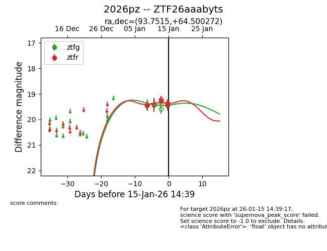
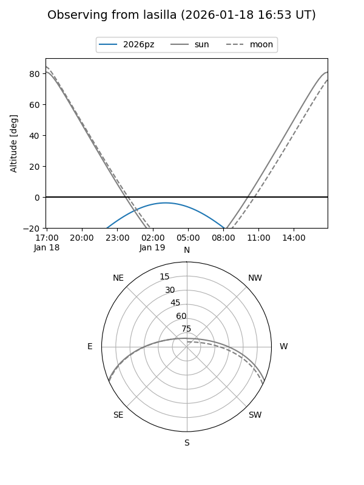
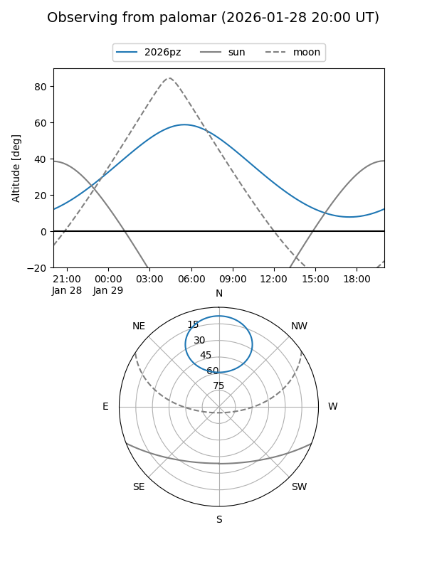
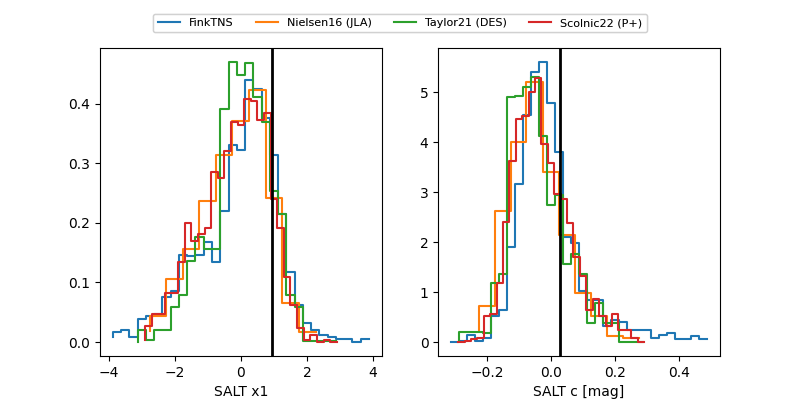

2026pz
Target 2026pz at 2026-01-22 09:16
Aliases and brokers:
FINK: link
Lasair: link
ALeRCE: link
TNS: link
YSE: link
alt names
ZTF26aaabyts (ztf,fink_ztf)
2026pz (tns,yse)
Coordinates:
equatorial (ra, dec) = 93.7515,+64.50027
equatorial (HMS+DMS) = 06:15:00.36,+64:30:00.98
galactic (l, b) = (149.9291,+20.54328)
Flags:
Photometry:
last ztfg=19.64, ztfr=19.42
6 ztfg, 7 ztfr detections
Lightcurve

Visibility


Additional plots
